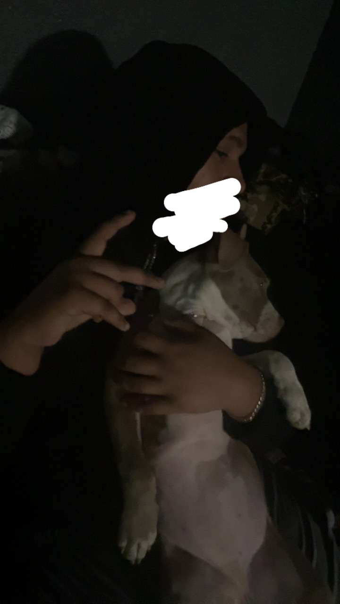
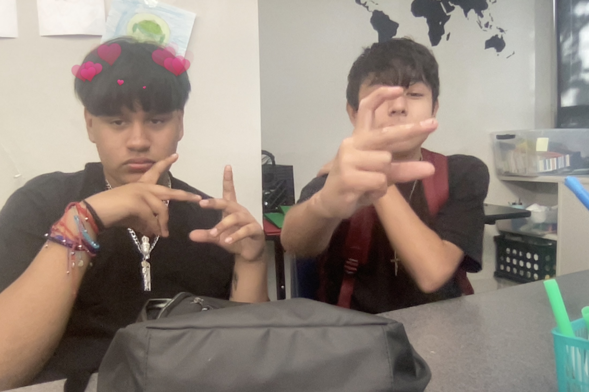
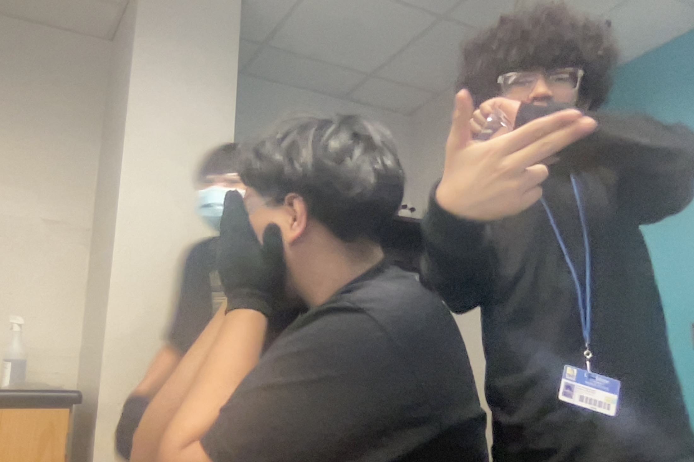
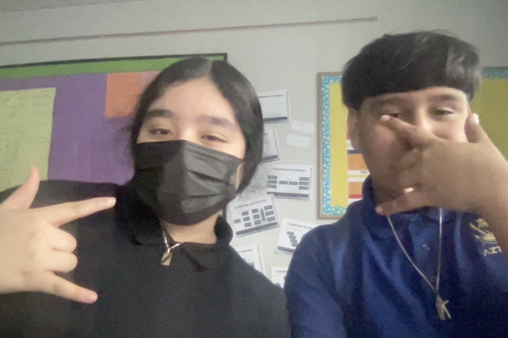
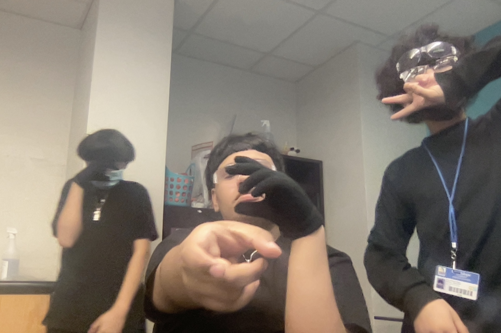

So this website is about my best friends and my dog🌟. they are my best freinds because they was always there for me when i was doing bad 🧏🏽♂️and my dog lala will always make me happy and she wouldnt even know it she will just brighen my day so you already know i had to put her on here🌹
    